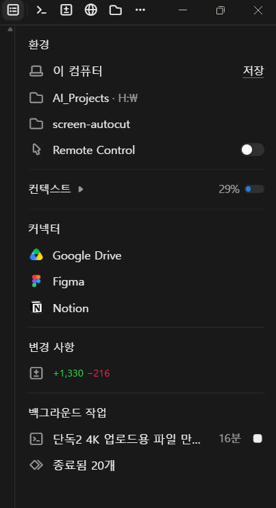
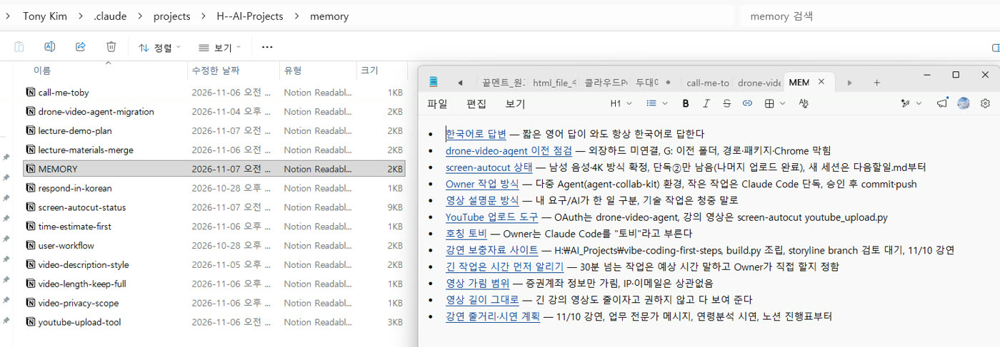
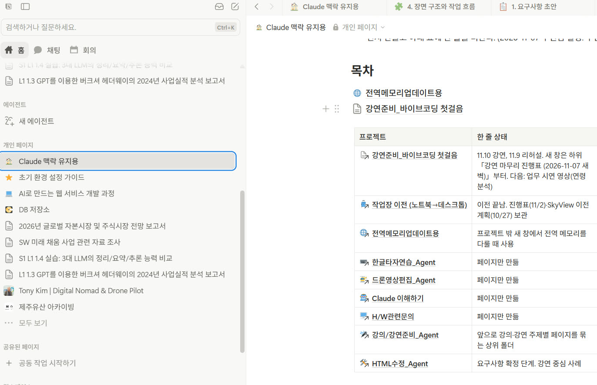
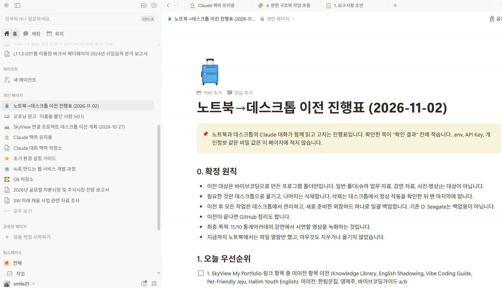

강연 보충자료 · 맥락 관리
AI의 기억 수첩:
어제 일을 오늘 이어 가는 법
강연자가 Claude(토비)와 매일 일하면서 실제로 쓰고 있는 방법입니다. AI는 대화가 끝나면 아무것도 기억하지 못합니다. 그래서 기억을 "적어 두고 다시 읽히는" 구조를 만들었습니다. 화면 캡처는 모두 실제 작업 화면입니다.
AI가 기억하는 것이 아니라, 사람이 기억할 곳을 정해 주고 AI가 그곳을 적고 읽게 하는 것입니다.
1 · 출발점
AI는 대화가 끝나면 잊습니다
Claude와 하루 종일 일하고 나서 새 대화창을 열면, Claude는 어제 무슨 일을 했는지 하나도 모릅니다. AI 모델은 대화와 대화 사이에 아무것도 남기지 않기 때문입니다.
대화 중에 기억하는 것은 컨텍스트(context, 맥락)라는 작업 공간에 올라가 있는 내용뿐입니다. 컴퓨터로 치면 RAM(내장 메모리)과 비슷합니다. 지금 하는 일을 올려 두고 쓰지만, 전원이 꺼지면 사라집니다. 대화가 길어지면 이 공간도 차서, 앞부분은 요약되며 흐려집니다.

그래서 오래 이어지는 일을 하려면, 대화가 끝나도 남는 곳에 적어 두었다가 다음 대화에서 다시 읽히는 구조가 필요합니다. 컴퓨터로 치면 저장장치(SSD)입니다. AI 도구들이 이 기능을 "메모리"라고 부르는데, 부품 이름이 아니라 사람의 "기억"이라는 뜻에서 빌려 온 말입니다.
대화 중의 기억은 RAM처럼 사라지고, 오래 남길 기억은 저장장치에 적어 두어야 합니다.
2 · 구조
기억을 세 곳에 나눠 적습니다
사람도 기억할 것을 한곳에 몰아 두지 않습니다. 수첩 첫 장에는 꼭 지킬 것만 적고, 자세한 내용은 업무일지에, 현장 상황은 현장 일지에 적습니다. 토비의 기억도 같은 방식으로 세 곳에 나눴습니다.
내 PC의 작은 글 파일. "한국어로 답한다", "증권계좌만 가린다"처럼 꼭 지킬 것과 "어디를 보라"는 안내. 새 대화에서 자동으로 읽힘.
프로젝트별 결정, 진행 상황, 다음 할 일. 자동으로 읽히지 않고 수첩의 안내를 보고 Claude가 열어 읽음. 휴대폰·다른 PC에서도 보임.
프로젝트 폴더 안의 다음할일.md 같은 현황표. 그 프로젝트에서 일할 때 읽음. 코드와 함께 버전이 남음.
| 메모리 파일 | 노션 | 작업 폴더 문서 | |
|---|---|---|---|
| 어디에 | 내 PC (C:\Users\…\.claude) | 노션 클라우드 | 프로젝트 폴더 |
| 새 대화에서 | 자동으로 읽힘 | 안내를 보고 열어 읽음 | 그 폴더에서 일할 때 읽음 |
| 무엇을 | 짧은 규칙과 이정표 | 결정, 진행표, 다음 할 일 | 파일 위치, 명령, 작업 순서 |
| 누가 보나 | 이 PC의 Code 탭 | 모든 Claude와 사람 | 그 폴더를 여는 Agent |
짧은 것은 자동으로 읽히는 수첩에, 긴 것은 노션에. 수첩에는 "자세한 건 노션 어디를 보라"고 적어 둡니다.
3 · 수첩 첫 장
메모리 파일: 한 장에 한 가지
Code 탭의 메모리는 클라우드가 아니라 내 PC에 있는 작은 글 파일입니다. 파일 하나에 기억 하나를 적고, MEMORY.md라는 목록 파일에 한 줄씩 이정표를 남깁니다. 새 대화를 시작하면 이 목록이 자동으로 Claude에게 들어갑니다.

메모마다 왜 그렇게 하는지와 언제 적용하는지를 함께 적습니다. 예를 들어 "긴 강의 영상도 줄이자고 권하지 않는다"에는 "필요한 사람은 다 보고 싶어 한다"는 강연자의 말이 이유로 붙어 있습니다. 이유를 알아야 비슷하지만 다른 상황에서도 바르게 판단하기 때문입니다.
알아 둘 점 두 가지
- 폴더마다 수첩이 따로 있습니다. 대화를 시작할 때 고른 작업 폴더마다 메모리 자리가 따로 생깁니다. 그래서 늘 같은 폴더(예: H:\AI_Projects)를 골라 시작합니다.
- 이 PC의 Code 탭에서만 자동으로 읽힙니다. 노트북의 Code 탭이나 Claude 탭(채팅)은 이 파일을 모릅니다. Claude 탭에는 계정에 붙는 별도의 메모리가 있습니다.
메모리는 AI 회사 서버의 특별한 기억이 아니라, 내 PC에 있는 열어 볼 수 있는 메모 파일입니다.
4 · 업무일지
노션: 시작 페이지 하나에서 내려갑니다
노션에는 「Claude 맥락 유지용」이라는 시작 페이지를 하나 두었습니다. 이 페이지에는 목차와 규칙만 있고, 프로젝트마다 페이지가 하나씩 달려 있습니다. 각 프로젝트 페이지는 "지금 상태 한 줄"과 최신 요약만 담고, 자세한 내용은 그 아래 하위 페이지로 나눕니다.

규칙은 페이지 안에 적어 둡니다
- 사람은 이 페이지에서 시작해 프로젝트로 내려갑니다.
- 프로젝트 페이지는 최신 요약으로 유지하고, 주제별 상세는 하위 페이지로 나눕니다.
- Claude는 새 페이지를 반드시 이 페이지 아래, 해당 프로젝트 밑에 만듭니다. 개인 페이지 맨 위(루트)에는 만들지 않습니다.
마지막 규칙은 실제로 겪고 나서 생겼습니다. 대화마다 Claude가 페이지를 그냥 만들다 보니, 어느새 개인 페이지 맨 위에 Claude가 만든 페이지가 여러 개 흩어졌습니다. 사람이 만든 페이지와 섞여 무엇이 어디 있는지 찾기 어려워졌습니다. 그래서 흩어진 페이지를 프로젝트 아래로 옮기고, 규칙으로 막았습니다. 노션 링크는 이름이나 위치가 아니라 고유 번호로 이어지기 때문에, 옮겨도 기존 링크는 끊어지지 않습니다.
시작 페이지 하나, 프로젝트마다 한 줄 상태. 그리고 "어디에 만들지"까지 규칙으로 정해 둡니다.
5 · 공용 게시판
두 PC의 Claude가 같은 페이지를 읽고 씁니다
노트북과 데스크톱에서 함께 일할 때, 두 컴퓨터의 Claude는 서로 직접 말할 수 없습니다. 같은 컴퓨터 안의 Claude 탭과 Code 탭도 마찬가지입니다. 그래서 노션 페이지 하나를 공용 진행표로 정하고, 모두 그 페이지를 읽고 결과를 적게 했습니다.

- 에이전트는 스스로 깨어나지 않습니다. 사람이 각 창에 "진행표 읽고 나에게 온 일 처리해"라고 한 줄만 보냅니다.
- 확인한 쪽이 결과를 적고, 다른 쪽은 그 결과를 읽고 다음 일을 정합니다.
- 비밀 값은 적지 않고 "있음/없음"만 적습니다. 값은 사람이 직접 옮깁니다.
서로 말할 수 없는 AI들도, 같은 기록을 보게 하면 함께 일할 수 있습니다.
6 · 하루의 흐름
시작할 때 읽고, 끝날 때 적습니다
실제 하루는 이렇게 돌아갑니다. 강연 준비 막바지의 어느 새벽이 그랬습니다.
- 새 대화 시작: H:\AI_Projects 폴더로 Code 탭을 엽니다. 메모리 목록이 자동으로 읽혀, 토비는 호칭, 말투, 지켜야 할 규칙을 이미 알고 시작합니다.
- 한 줄로 부르기: "토비야, 노션 「강연 마무리 진행표」 읽고 이어 가자." 메모리에 "강연 이야기는 노션 진행표부터"라는 이정표가 있어 바로 그 페이지를 엽니다.
- 일하기: 진행표의 다음 할 일부터 처리합니다. 프로젝트 폴더의 현황표(다음할일.md)로 파일 위치와 명령을 확인합니다.
- 새로 정한 것 적기: 사람이 "앞으로는 이렇게 하자"고 정하면 그 자리에서 메모리 파일에 이유와 함께 적습니다.
- 끝낼 때 정리: "오늘 내용 정리해 두고 내일 새 창에서 하자"고 하면 노션 진행표, 현황표, 메모리 이정표를 모두 고쳐 둡니다.
이렇게 하면 대화창은 바뀌어도 일은 끊기지 않습니다. 대화가 길어져 컨텍스트가 차면, 정리하고 새 창으로 옮기는 편이 오히려 정확합니다.
대화는 바뀌어도 기록은 남습니다. 시작할 때 기록을 읽게 하고, 끝날 때 기록을 고치게 합니다.
7 · 따라 하기
여러분이 따라 하려면 세 가지면 됩니다
- 시작 페이지 하나를 만드십시오. 노션이든 구글 문서든 상관없습니다. 목차와 규칙만 두고, 프로젝트마다 "지금 상태 한 줄"을 적습니다.
- 끝날 때 정리를 시키십시오. "오늘 정한 것과 다음 할 일을 시작 페이지 아래 프로젝트에 정리해 줘." 이 한 마디가 다음 날을 살립니다.
- 시작할 때 읽게 하십시오. 새 대화의 첫 문장을 정해 두면 됩니다.
노션 「(시작 페이지 이름)」을 먼저 읽고, (프로젝트 이름) 페이지의 지금 상태와 다음 할 일을 짧게 정리해 줘. 정리가 맞는지 내가 확인하면 그때부터 이어서 하자.
Claude 탭(채팅)을 쓰신다면 프로젝트 지침에 "새 페이지는 시작 페이지 아래 프로젝트 밑에만 만든다"는 한 줄도 넣어 두십시오. 그래야 페이지가 흩어지지 않습니다.
AI에게 기억력을 바라기보다, 기억할 곳과 읽는 순서를 정해 주십시오. 그것이 사람이 할 일입니다.
함께 보면 좋은 자료
Claude 탭(채팅)에서 쓰는 프로젝트 메모리와 계정 메모리 설정은 따로 정리해 두었습니다.